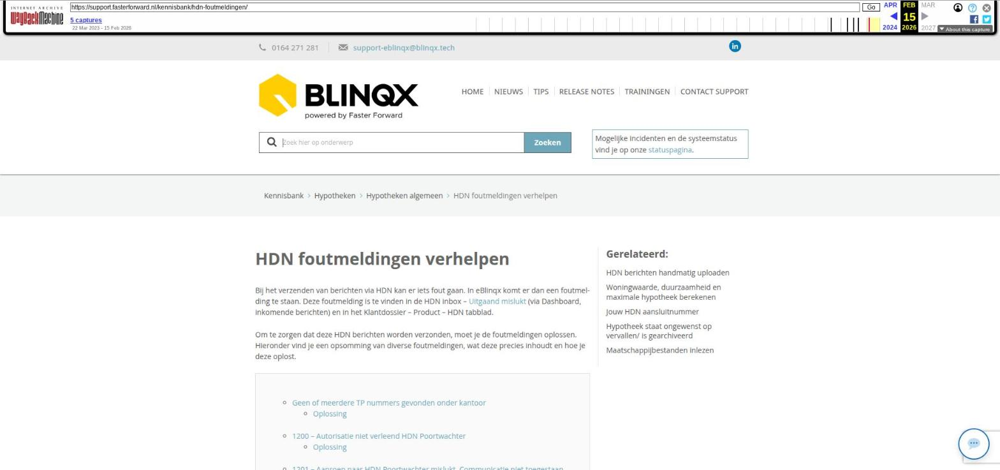

HDN foutmeldingen verhelpen

Tekstinhoud
HDN foutmeldingen verhelpen
Bij het verzenden van berichten via HDN kan er iets fout gaan. In eBlinqx komt er dan een foutmelding te staan. Deze foutmelding is te vinden in de HDN inbox – Uitgaand mislukt (via Dashboard, inkomende berichten) en in het Klantdossier – Product – HDN tabblad.
Om te zorgen dat deze HDN berichten worden verzonden, moet je de foutmeldingen oplossen. Hieronder vind je een opsomming van diverse foutmeldingen, wat deze precies inhoudt en hoe je deze oplost.
Geen of meerdere TP nummers gevonden onder kantoor
Oplossing
1200 – Autorisatie niet verleend HDN Poortwachter
Oplossing
1201 – Aanroep naar HDN Poortwachter mislukt. Communicatie niet toegestaan
Oplossing
1006 – Aansluitnummer niet gevonden
Oplossing
1034 – Het bericht bevat een ernstige fout die niet te corrigeren is
Oplossing
1030 – Certificaat niet actief
Oplossing
1041 – Subnode niet gevonden
Oplossing
1020 – Geen certificaat aanwezig
Oplossing
400 – {"error_description":"Account disabled","error":"invalid_grant"}
Oplossing
-1- eBlinqx heeft dit aanvraagvolgnummer al eens naar een andere ontvanger verstuurd
Oplossing
Validatie is mislukt voor bericht
Oplossing
Geen of meerdere TP nummers gevonden onder kantoor
In het aanvraagbericht wordt het tussenpersoonsnummer meegestuurd. Deze dient, per kantoor en type, in eBlinqx te staan. De types zijn bijvoorbeeld hypotheek en levensverzekering. Is dit niet het geval of staan er voor hetzelfde kantoor en hetzelfde type meerdere nummers dan komt de melding 'geen of meerdere TP nummers gevonden onder kantoor'.
Oplossing
Zoek (indien je hier de rechten voor hebt) via beheer – organisatie & personen de betreffende maatschappij op. Onder de tab 'aanstellingen' hoort het tussenpersoonsnummer per kantoor en per type te staan. Indien dit niet het geval is, kan je deze toevoegen door middel van de '+'.
Vervolgens vul je de volgende velden in:
Deelnemer (via het blauwe pijltje) = kantoor
Type
Status = geaccepteerd
Huidig aanstellingsnummer = tussenpersoonsnummer
Nieuw aanstellingsnummer = tussenpersoonsnummer
Datum aanvraag = een willekeurige datum in het verleden
Let op: wanneer je geen direct aanstellingsnummer hebt bij de maatschappij dan dien je bij het huidig en nieuw aanstellingsnummer een '1' in te vullen.
Wanneer het tussenpersoonsnummer is ingevuld dan kan je de aanvraag vanuit het dossier (via de workflow) nogmaals via HDN verzenden.
1200 – Autorisatie niet verleend HDN Poortwachter
De HDN berichten gaan bij het verzenden langs een 'poortwachter'. Deze scant of het bericht correct is. Bij de melding '1200 Autorisatie niet verleend door HDN poortwachter' geeft de poortwacht geen 'toestemming'. Het bericht is niet correct. De melding kan om verschillende redenen verschijnen oa:
Het bericht wordt verstuurd naar een incorrect HDN nummer. Een voorbeeld: De maatschappij REAAL heeft twee verschillende HDN nummers, één voor hypotheken en één voor verzekeren. Wanneer je een aanvraag hypotheek verstuurt naar REAAL met het HDN nummer verzekeren dan komt de melding '1200 Autorisatie niet verleend door HDN poortwachter'. De aanvraag moet namelijk gestuurd worden naar REAAL met het HDN nummer hypotheken. Een ander voorbeeld: onder BLG Wonen staat het HDNnummer van Lot Hypotheken.
De foutmelding verschijnt bij het verzenden van een DX bericht. Dan is het bestand te groot (max 25MB) of de maatschappij heeft geen DA (documentaanvraag) bericht voor dit document verzonden.
Oplossing
Op hdn.nl vind je de verschillende HDN nummers. Hier controleer je het HDN nummer. In eBlinqx kan je, wanneer je hier de rechten voor hebt, via Beheer > Organisatie & personen maatschappijen terug vinden. Onder het tabblad inventarisatie vind je het HDN nummer. Indien hier een incorrect HDN nummer staat dan kan je deze verwijderen door middel van het rode kruisje en het juiste HDN nummer toevoegen door middel van het kleine plusje. Wanneer het HDN nummer gewijzigd is, kan je de aanvraag vanuit het dossier nogmaals via HDN verzenden (via de workflow).
In het geval van het voorbeeld REAAL dan kan je bij 'beheer – organisaties & personen kijken of er een maatschappij REAAL Verzekeringen en REAAL Hypotheken is. Onder het tabblad inventarisatie kan er namelijk maar 1 HDN nummer opgevoerd worden. Aangezien REAAL 2 verschillende HDN nummers heeft, moeten er dus twee maatschappijen aangemaakt worden. Indien de maatschappij REAAL Hypotheken al bestaat in eBlinqx (met het juiste HDN nummer hypotheken) dan dien je deze maatschappij te selecteren bij het aanvullen van het bericht in de HDN inbox. Let op: de producten moeten onder de maatschappij staan om deze te kunnen selecteren (dit kan je controleren via beheer – productbeheer'). Wanneer de maatschappij REAAL Hypotheken nog niet bestaan in eBlinqx dan dient deze (inclusief producten) aangemaakt te worden. Hoe je dit doet, lees je hier.
Wat betreft de DX berichten. Indien het bestand te groot is, dien je het bestand te verkleinen. Je gaat dan naar het betreffende stuk. Het grote document wat aan het stuk gekoppeld is, verwijder je. Let op niet het gehele stuk verwijderen. Vervolgens voeg je het verkleinde bestand toe. Via de HDN inbox – uitgaand mislukt kan je het DX nogmaals aanbieden. Dit via de pijltjes die in een rondje staan.
Indien de maatschappij geen DA bericht heeft verzonden, dan heb je ook 'geen toestemming' om het DX bericht te verzenden. De maatschappij dient dan eerst het DA bericht te verzenden. De toegezonden DA berichten vind je terug in het dossier – betreffende hypotheekproduct – tabblad HDN. Via het vergrootglas kan je de verschillende documenten en de bijbehorende status terug vinden.
1201 – Aanroep naar HDN Poortwachter mislukt. Communicatie niet toegestaan
Deze melding verschijnt meestal bij het verzenden van documenten (DX bericht). Het kan zijn dat het verstuurde document niet vernoemd staat in het DA bericht. Of niet de status 'aan te leveren' heeft. Dit kan je controleren in het DA bericht zelf. Deze is te vinden bij het tabje HDN in het product.
Oplossing
Als dat zo is, vraag dan de maatschappij om een nieuw DA bericht te sturen, waarin het betreffende document met de status 'aan te leveren' staat.
Soms komt het bericht er niet doorheen, terwijl er geen reden tot foutmelding is. Het is dan mogelijk om het bericht nogmaals te verzenden. Dit kan je doen via de HDN inbox > Uitgaand mislukt > de ronde pijltjes. Het bericht komt dan in de wachtrij te staan en wordt opnieuw verzonden.
Blijft de melding toch verschijnen? Neem dan contact op met de maatschappij en vraag waarom de communicatie niet is toegestaan.
1006 – Aansluitnummer niet gevonden
In eBlinqx staat onder de maatschappij bij het tabblad inventarisatie het HDN nummer. Indien hier een niet bestaand HDN nummer staat dan verschijnt deze melding na het verzenden van de HDN aanvraag vanuit het dossier.
Oplossing
Ga via 'Beheer > Organisatie & personen – betreffende maatschappij' naar het tabblad inventarisatie. Het foutieve HDN nummer kan je verwijderen door middel van het rode kruisje. Zoek op hdn.nl het juiste HDN nummer en voeg deze hier toe door middel van het plusje. Hier kies je voor het type 'HDN Certificaatnummer'.
1034 – Het bericht bevat een ernstige fout die niet te corrigeren is
Bij deze melding hoort ook een binnenkomend VX bericht. In dit VX bericht staat wat de ernstige fout is.
Oplossing
Hier is meer informatie te vinden over hoe het VX bericht te lezen en hoe je het kunt oplossen.
1030 – Certificaat niet actief
Als deze melding verschijnt dan is dit meestal na het verlengen van het HDN certificaat. Zoals de melding al aangeeft, is het certificaat niet actief.
Oplossing
In de HDN Webcert tool kan je eBlinqx als softwareleverancier eerst afmelden en vervolgens weer aanmelden. Indien dit niet werkt, kan je contact opnemen met HDN
1041 – Subnode niet gevonden
Deze melding geeft aan dat Blinqx, als softwareleverancier, niet gemachtigd is om berichten te mogen ondertekenen en verzenden. Blinqx dient gemachtigd te zijn. Dit heeft betrekking op jouw HDN aansluitnummer wat bij ons bekend is. Deze is te vinden via 'beheer – organisaties & personen – eigen organisatie – tab inventarisatie'.
Oplossing
Open de WebCert Tool van HDN. Hier kan je (per aansluitnummer) controleren of er een softwareleverancier gemachtigd is en zo niet dan kan je Blinqx alsnog machtigen. Heb je hier vragen over? Dan kun je contact opnemen met HDN. Indien de Blinqx gemachtigd is dan kan je vanuit het dossier de aanvraag nogmaals via HDN verzenden.
1020 – Geen certificaat aanwezig
Wanneer deze melding verschijnt dan is er geen (geldig) HDN certificaat aanwezig om vanuit eBlinqx te kunnen versturen. Het kan zijn dat het certificaat verlopen is.
Oplossing
Indien het certificaat verlopen is, dan dient deze verlengd te worden. Die kan via de WebCert Tool van HDN. Is er geen certificaat aanwezig, dan dient deze aangevraagd te worden. Indien hier vragen over zijn kun je contact opnemen met HDN.
400 – {"error_description":"Account disabled","error":"invalid_grant"}
Deze melding verschijnt wanneer het certificaat niet meer goed is. Het certificaat dient vernieuwd te worden.
Oplossing
Neem contact op met HDN. Na vernieuwen van het certificaat moet Blinqx via de HDN-app (Webcert Tool) gemachtigd zijn om als softwareleverancier de aanvraag te mogen ondertekenen en verzenden.
-1- eBlinqx heeft dit aanvraagvolgnummer al eens naar een andere ontvanger verstuurd
In de HDN aanvraag wordt een aanvraagvolgnummer of bepaald ID meegestuurd. Dit aanvraagvolgnummer of ID moet uniek zijn. Toch kan het voorkomen dat hetzelfde aanvraagvolgnummer of ID wordt gegenereerd, waardoor deze in de aanvraag niet meer uniek is. Bovenstaande foutmelding verschijnt dan.
Deze melding verschijnt ook als je vanuit het dossier de aanvraag hebt verstuurd, maar je komt erachter dat de inkoop via niet juist staat ingesteld. Je past deze inkoop via aan en vervolgens verstuur je de aanvraag nogmaals.
Oplossing
Je zal vanuit het adviespakket een geheel nieuwe aanvraag moeten versturen naar eBlinqx. Deze aanvraag zal dan een nieuw (uniek) aanvraagvolgnummer of ID krijgen en de foutmelding zal niet meer verschijnen.
Validatie is mislukt voor bericht
Wanneer een bericht via HDN verzonden wordt dan wordt dit bericht gevalideerd. Het kan zijn dat het verzonden bericht niet door deze validatie komt, omdat bijvoorbeeld een bepaald veld foutief gevuld is. Er komt dan een VX bericht binnen en achter het verzonden AX bericht komt de melding 'Validatie is mislukt' voor bericht te staan.
Oplossing
Hier lees je meer over hoe je dit VX bericht kunnen lezen en hoe je de betreffende validatiefout eruit kan halen. De oplossing verschilt per validatiefout. In de meeste gevallen dien je in het adviespakket de fout te corrigeren om vervolgens de aanvraag opnieuw naar eBlinqx te verzenden.
Laatste update: 15 oktober 2025
Tagged: certificaathdn
Was deze informatie nuttig?
Ja Nee